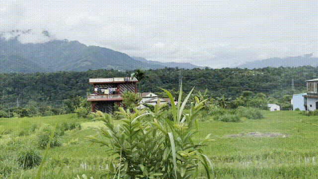

Don't worry, I'm still alive!
In the immortal words of Ewan McGregor (and perhaps slightly less famously, Sir Alec Guinness), hello there. I'm a bit overdue for another post, so I figured I'd give an all around update with some new photos. This past weekend I was at a football tournament again, so I've documented some of that and given a few other updates.
Hello There

It's currently Saturday, August 22nd at 9:37 PM here in Ghairung, Gorkha. Today started eventfully with a big football (soccer, for the Americans reading this) match between the kids in my area and some of the kids in surrounding areas (all from within Gorkha district, so roughly an hour radius in any direction). At about 9:30 I headed from my host family's pasal¹ to the main chowk² in town where I told my students I would wait for them so they could bring me to the football tournament that would be occurring today. I went to sit briefly at "Biloj Grocery" which is my go to spot if I have time to kill in the area, but by the time I made it over there my students were already waiting. We headed for the field.
Biloj Grocery

There's a few football grounds in the area. One large one that people are pretty familiar with, as it's a common place for a number of community events, as well as a common place for farmers to bring their rango³ to graze. Today we were heading up the hill a bit to a slightly smaller, but still fairly sizeable field. Any time you're going anywhere in Nepal that isn't connected by the main road, it often feels a bit like you are traversing through a sort of Alice in Wonderland storybook. You'll climb through yards, across small streams, along the edge of various khet⁴ , and then eventually your chauffeurs (usually a Nepali child or children) will turn the corner and you'll sort of just be where you meant to be. Upon arriving at the field I saw my principal a field or two over harvesting something with his family - from the distance I was at I couldn't exactly tell what it was.
Through the Woods

More Through the Woods

Several of my students were already there, sitting in the bit of shade afforded by a slightly scraggly looking tree. One student was using a namlo⁵ to carry grass that he had cut for his family's livestock. Another student was bringing water for the group, as it was a rather sunny and warm day today. Being at the tail end of monsoon season now, we get the wonderful combination of high temperatures and high humidity, but little rain to cool it all off. I didn't even play football today and I was sweating buckets.
Gearing up

In Nepal, there is a bit of a cultural joke around "Nepali time", which if you're familiar with "punk time" it means effectively the same thing. If you're not familiar with either, it simply refers to being particularly flexible with the timing of things. Start times, end times, and all the time in between is constantly subject to change without advance warning. Allegedly the football game would be starting at 10 AM. At about 10:30 I took a walk to stretch my legs and get some water from a pasal nearby. Shortly after I returned the game began. Not egregious, especially for just a football game, but something to be aware of here. One way that I've had it described to me is that in the US we structure our schedules by time of day; e.g., at 8:00 AM we will have breakfast, then at 9:00 AM we will go to the store. In Nepal, it is structured more around the activities themselves. When we wake up, we will have breakfast, and then when that is done, we will go to the store. At a surface level, not very different, but when 10:30 rolls around for the football tournament and then someone says "alright let me just run home and get the ball" it can feel a little more stark.
All the teams played quite well. I had students on several different teams playing, so I got to cheer on many groups. It was all groups of 5, 1 goalie and 4 other players usually split 3 offense 1 defense. Aside from that it's pretty standard football. Some teams were older and clearly more skilled, some were younger and were still learning. Broadly, it was a fun time for everyone. I sat with various students and other kids between their games. With strangers we had the usual questions: where I'm from, how old I am, am I married, why am I not married, will I marry a Nepali girl. It's fairly harmless unless they start pointing out people in the vicinity I could marry, and that's usually when I interrupt them to change the subject. With my students the usual conversations are a bit less surface level. We just had the first round of exams for the year at my school, so many of them were curious whether they had passed. I told them they will find out on Monday.
The match in action

Me and some of the players

After about 5 hours of sitting in the sun watching the games, I realized I had gotten a bit of a sunburn. Because my site in Nepal is at a higher elevation than I'm used to back home (by about a kilometer), sunburns set in much quicker here. Having run out of water and not wanting to get burned worse, I decided to call it for the day. I didn't find out who won the game, but I'm sure I'll find out from my students on Monday. I packed up my stuff and headed back to my host family's home, where I took it easy and graded exams for the rest of the day.
Exams

Since I haven't updated this in a few months, I'll also throw in a quick rundown of what I've been up to. The big thing that's taken a ton of time is monsoon season. School has a 3 week long monsoon season holiday, and during that time rain occurs pretty much every afternoon, if not more often. To be honest, I was kind of excited for monsoon season. I love the rain, and an excuse to hang around inside and listen to the rain all day for 3 weeks actually sounded pretty enticing. What it really turned out to be was very hot, humid, and cloudy days with no rain, followed by rain every afternoon or evening, and a ton of mold to boot. When you are washing your clothes by hand, you rely on the sun to dry them out. If it's cloudy all day and your clothes aren't dry by nightfall, you can be pretty sure they're going to get rained on overnight. This is especially frustrating because there's not a lot you can do about it, unless you want to bring a bunch of sopping wet clothes into your bedroom. So, you let them get rained on, then if you have time you wash them again the next morning, or if it's only rained a bit you can just let them dry.
Cloudy days

More clouds

The mold in particular was a little bit tough to deal with. Because there's not great seals around the windows or doors, there's really no way to keep moisture from getting inside, which means that eventually your clothes will become damp, and will need to be washed and dried lest they become moldy (whether you realize it or not). Those who have lived with or near me will know that I have a pretty strong allergic reaction to mold (nothing dangerous, but a lot of sneezing) and have to deal with it pretty promptly. I've sort of considered it a double edged sword - sort of a spidey sense for detecting mold in my vicinity. It's annoying, but frankly I would rather know that there's mold in my living space than not, especially with the adverse health effects that can come with living in a mold infested environment.
A picture of some mold

Anyway, the the short of it is that I spent most days doing laundry during monsoon season. Some days I'd discover a towel or some pants had become moldy without my knowing, some days it would be my bed sheets, sometimes I would realize that every article of clothing I own had become musty and I needed to wash it all. My backpack, my toiletries case, my school uniform, tote bags, and more. Basically, everything is suspect during monsoon season. I'm happy to report that I've gone through several bottles of vinegar (which, being a natural acid, kills mold) and have since installed a rope clothes rack so I no longer need to store my clothing folded up and close to the ground. Generally, things are looking up in a big way here since monsoon season.
DIY clothes rack

I have more updates to give, but since it's been a bit of time, I think I'll split the rest of them into a separate post. I should be getting to bed here - I hope you all have a nice day or night and thank you again for reading and commenting.
See ya

- pasal: A storefront. Many families have small store fronts connected to their home from which they can sell snacks, drinks, cigarettes, and other small items.
- chowk: Nepali word for intersection or square.
- rango: Asian water buffalo, often raised for meat.
- khet: Agricultural fields for planting.
- namlo: A woven headband to carry a heavy basket on your back. Very commonly used for agriculture in Nepal.